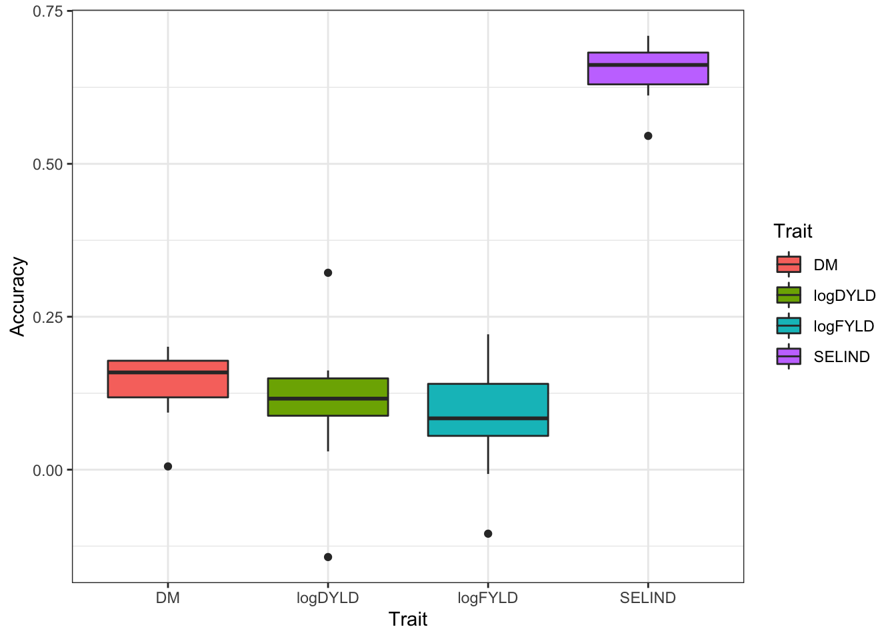

Last updated: 2022-05-09
Checks: 7 0
Knit directory: GSexample2022/
This reproducible R Markdown analysis was created with workflowr (version 1.7.0). The Checks tab describes the reproducibility checks that were applied when the results were created. The Past versions tab lists the development history.
Great! Since the R Markdown file has been committed to the Git repository, you know the exact version of the code that produced these results.
Great job! The global environment was empty. Objects defined in the global environment can affect the analysis in your R Markdown file in unknown ways. For reproduciblity it’s best to always run the code in an empty environment.
The command set.seed(20220320) was run prior to running the code in the R Markdown file. Setting a seed ensures that any results that rely on randomness, e.g. subsampling or permutations, are reproducible.
Great job! Recording the operating system, R version, and package versions is critical for reproducibility.
Nice! There were no cached chunks for this analysis, so you can be confident that you successfully produced the results during this run.
Great job! Using relative paths to the files within your workflowr project makes it easier to run your code on other machines.
Great! You are using Git for version control. Tracking code development and connecting the code version to the results is critical for reproducibility.
The results in this page were generated with repository version bb2d981. See the Past versions tab to see a history of the changes made to the R Markdown and HTML files.
Note that you need to be careful to ensure that all relevant files for the analysis have been committed to Git prior to generating the results (you can use wflow_publish or wflow_git_commit). workflowr only checks the R Markdown file, but you know if there are other scripts or data files that it depends on. Below is the status of the Git repository when the results were generated:
Ignored files:
Ignored: .Rhistory
Ignored: .Rproj.user/
Untracked files:
Untracked: .DS_Store
Untracked: Icon
Untracked: analysis/.DS_Store
Untracked: analysis/BreedBaseGenotypes_subset.log
Untracked: analysis/Icon
Untracked: analysis/images/Icon
Untracked: analysis/images/paste-2F34C15B.png
Untracked: analysis/images/paste-AD7AEEAC.png
Untracked: analysis/images/paste-CB5D91AC.png
Untracked: analysis/troubleshooting.Rmd
Untracked: code/Icon
Untracked: data/.DS_Store
Untracked: data/BreedBaseGenotypesDownload.positions
Untracked: data/BreedBaseGenotypesDownload.vcf
Untracked: data/BreedBaseGenotypes_subset.bed
Untracked: data/BreedBaseGenotypes_subset.bim
Untracked: data/BreedBaseGenotypes_subset.fam
Untracked: data/BreedBaseGenotypes_subset.hap.gz
Untracked: data/BreedBaseGenotypes_subset.log
Untracked: data/BreedBaseGenotypes_subset.nosex
Untracked: data/BreedBaseGenotypes_subset.positions
Untracked: data/BreedBaseGenotypes_subset.samples
Untracked: data/Icon
Untracked: data/metadata_cynthia.csv
Untracked: data/phenotype_cynthia.csv
Untracked: data/subset_unique_names_for_vcf.txt
Untracked: data/unique_names_for_vcf.txt
Untracked: data/vcf_colnames.txt
Untracked: out.log
Untracked: output/.DS_Store
Untracked: output/BreedBaseGenotypes_subset.genome
Untracked: output/BreedBaseGenotypes_subset.log
Untracked: output/BreedBaseGenotypes_subset.nosex
Untracked: output/Icon
Untracked: output/genomicPredictions.rds
Untracked: output/models_compared.Rdata
Untracked: output/parentWiseCV.rds
Untracked: output/standardCV.rds
Untracked: output/verified_ped.rds
Note that any generated files, e.g. HTML, png, CSS, etc., are not included in this status report because it is ok for generated content to have uncommitted changes.
These are the previous versions of the repository in which changes were made to the R Markdown (analysis/kfoldcrossval.Rmd) and HTML (docs/kfoldcrossval.html) files. If you’ve configured a remote Git repository (see ?wflow_git_remote), click on the hyperlinks in the table below to view the files as they were in that past version.
| File | Version | Author | Date | Message |
|---|---|---|---|---|
| Rmd | bb2d981 | wolfemd | 2022-05-09 | Add the final two sections - parent-wise cross-validation plus predicting crosses |
| html | 260d2fe | wolfemd | 2022-05-05 | Build site. |
| Rmd | 975daa7 | wolfemd | 2022-05-05 | Publish demo for k-fold cross-val and genomic prediction of GEBV steps |
suppressMessages(library(tidyverse));
suppressMessages(library(genomicMateSelectR));
suppressMessages(library(sommer))blups<-readRDS(here::here("output","blups.rds"))
A<-readRDS(file=here::here("output","kinship_add.rds"))blups %<>%
# need to rename the "blups" list to comply with the runCrossVal function
rename(TrainingData=blups) %>%
dplyr::select(Trait,TrainingData) %>%
# need also to remove phenotyped-but-not-genotyped lines
# couldn't hurt to also subset the kinship to only phenotyped lines... would save RAM
mutate(TrainingData=map(TrainingData,
~filter(.,germplasmName %in% rownames(A)) %>%
# rename the germplasmName column to GID
rename(GID=germplasmName))) %>%
# Exclude MCMDS in this example
filter(Trait != "MCMDS")
blups# A tibble: 3 × 2
Trait TrainingData
<chr> <list>
1 DM <tibble [962 × 6]>
2 logFYLD <tibble [350 × 6]>
3 logDYLD <tibble [348 × 6]># For fastest, lightest compute of accuracy, remove non-phenotyped from kinship
gids<-blups %>%
unnest(TrainingData) %$% unique(GID)
# dim(A) [1] 963 963
A<-A[gids,gids]Set-up a vector of index weights.
SIwts<-c(DM=15,
logFYLD=20,
logDYLD=20)
SIwts DM logFYLD logDYLD
15 20 20 Run 2 repetitions of 5-fold cross-validation.
Means 10 predictions per trait overall.
I’ve got a 16-core laptop so I can use ncores=10, to do all 10 predictions per trait at the same time.
runCrossVal() will process all traits and compute the selection index accuracy.
standardCV<-runCrossVal(blups=blups,
modelType="A",
selInd=TRUE,SIwts=SIwts,
grms=list(A=A),
nrepeats=2,nfolds=5,
gid="GID",seed=424242,
ncores=10)Loading required package: rsampleLoading required package: furrrLoading required package: futureiteration LogLik wall cpu(sec) restrained
1 -288.132 20:22:5 2 0
2 -287.355 20:22:9 6 0
3 -287.06 20:22:11 8 0
4 -287.005 20:22:14 11 0
5 -287.002 20:22:18 15 0
6 -287.002 20:22:21 18 0
[1] "GBLUP model complete - one trait"
iteration LogLik wall cpu(sec) restrained
1 -111.639 20:22:24 0 0
2 -111.512 20:22:24 0 0
3 -111.431 20:22:24 0 0
4 -111.395 20:22:24 0 0
5 -111.387 20:22:24 0 0
6 -111.384 20:22:24 0 0
7 -111.384 20:22:25 1 0
[1] "GBLUP model complete - one trait"
iteration LogLik wall cpu(sec) restrained
1 -118.692 20:22:26 0 0
2 -118.638 20:22:26 0 0
3 -118.609 20:22:26 0 0
4 -118.599 20:22:26 0 0
5 -118.597 20:22:26 0 0
6 -118.597 20:22:26 0 0
[1] "GBLUP model complete - one trait"
[1] "Genomic predictions done for all traits in one repeat-fold"Joining, by = "GID"Joining, by = "GID"
Joining, by = "GID"
Joining, by = "GID"iteration LogLik wall cpu(sec) restrained
1 -295.037 20:22:6 3 0
2 -293.766 20:22:10 7 0
3 -293.206 20:22:12 9 0
4 -293.079 20:22:16 13 0
5 -293.068 20:22:19 16 0
6 -293.067 20:22:23 20 0
[1] "GBLUP model complete - one trait"
iteration LogLik wall cpu(sec) restrained
1 -115.633 20:22:25 0 0
2 -115.611 20:22:25 0 0
3 -115.599 20:22:26 1 0
4 -115.594 20:22:26 1 0
5 -115.594 20:22:26 1 0
[1] "GBLUP model complete - one trait"
iteration LogLik wall cpu(sec) restrained
1 -123.513 20:22:27 1 0
2 -123.512 20:22:27 1 0
3 -123.511 20:22:27 1 0
4 -123.511 20:22:27 1 0
[1] "GBLUP model complete - one trait"
[1] "Genomic predictions done for all traits in one repeat-fold"Joining, by = "GID"
Joining, by = "GID"
Joining, by = "GID"
Joining, by = "GID"iteration LogLik wall cpu(sec) restrained
1 -279.53 20:22:8 4 0
2 -279.11 20:22:10 6 0
3 -278.935 20:22:14 10 0
4 -278.897 20:22:17 13 0
5 -278.894 20:22:20 16 0
6 -278.894 20:22:24 20 0
[1] "GBLUP model complete - one trait"
iteration LogLik wall cpu(sec) restrained
1 -103.979 20:22:27 1 0
2 -103.465 20:22:27 1 0
3 -103.223 20:22:27 1 0
4 -103.189 20:22:27 1 0
5 -103.189 20:22:27 1 0
[1] "GBLUP model complete - one trait"
iteration LogLik wall cpu(sec) restrained
1 -114.994 20:22:28 0 0
2 -114.814 20:22:28 0 0
3 -114.749 20:22:28 0 0
4 -114.741 20:22:28 0 0
5 -114.741 20:22:28 0 0
[1] "GBLUP model complete - one trait"
[1] "Genomic predictions done for all traits in one repeat-fold"Joining, by = "GID"
Joining, by = "GID"
Joining, by = "GID"
Joining, by = "GID"iteration LogLik wall cpu(sec) restrained
1 -288.678 20:22:9 5 0
2 -286.897 20:22:11 7 0
3 -286.123 20:22:15 11 0
4 -285.932 20:22:18 14 0
5 -285.911 20:22:21 17 0
6 -285.909 20:22:25 21 0
7 -285.909 20:22:28 24 0
[1] "GBLUP model complete - one trait"
iteration LogLik wall cpu(sec) restrained
1 -106.766 20:22:30 0 0
2 -106.743 20:22:30 0 0
3 -106.73 20:22:30 0 0
4 -106.726 20:22:30 0 0
5 -106.726 20:22:30 0 0
[1] "GBLUP model complete - one trait"
iteration LogLik wall cpu(sec) restrained
1 -115.647 20:22:31 1 0
2 -115.632 20:22:31 1 0
3 -115.626 20:22:31 1 0
4 -115.625 20:22:31 1 0
5 -115.625 20:22:31 1 0
[1] "GBLUP model complete - one trait"
[1] "Genomic predictions done for all traits in one repeat-fold"Joining, by = "GID"
Joining, by = "GID"
Joining, by = "GID"
Joining, by = "GID"iteration LogLik wall cpu(sec) restrained
1 -275.405 20:22:10 5 0
2 -275.178 20:22:13 8 0
3 -275.062 20:22:16 11 0
4 -275.029 20:22:19 14 0
5 -275.024 20:22:23 18 0
6 -275.024 20:22:26 21 0
[1] "GBLUP model complete - one trait"
iteration LogLik wall cpu(sec) restrained
1 -103.863 20:22:28 0 0
2 -103.863 20:22:28 0 0
3 -103.862 20:22:29 1 0
4 -103.862 20:22:29 1 0
[1] "GBLUP model complete - one trait"
iteration LogLik wall cpu(sec) restrained
1 -111.274 20:22:29 0 0
2 -111.269 20:22:29 0 0
3 -111.266 20:22:29 0 0
4 -111.265 20:22:30 1 0
[1] "GBLUP model complete - one trait"
[1] "Genomic predictions done for all traits in one repeat-fold"Joining, by = "GID"
Joining, by = "GID"
Joining, by = "GID"
Joining, by = "GID"iteration LogLik wall cpu(sec) restrained
1 -288.661 20:22:10 4 0
2 -287.363 20:22:14 8 0
3 -286.795 20:22:17 11 0
4 -286.666 20:22:20 14 0
5 -286.654 20:22:24 18 0
6 -286.653 20:22:27 21 0
[1] "GBLUP model complete - one trait"
iteration LogLik wall cpu(sec) restrained
1 -112.851 20:22:29 0 0
2 -112.841 20:22:29 0 0
3 -112.835 20:22:29 0 0
4 -112.832 20:22:29 0 0
5 -112.831 20:22:29 0 0
[1] "GBLUP model complete - one trait"
iteration LogLik wall cpu(sec) restrained
1 -121.595 20:22:30 0 0
2 -121.56 20:22:30 0 0
3 -121.537 20:22:30 0 0
4 -121.529 20:22:30 0 0
5 -121.527 20:22:30 0 0
6 -121.527 20:22:30 0 0
[1] "GBLUP model complete - one trait"
[1] "Genomic predictions done for all traits in one repeat-fold"Joining, by = "GID"
Joining, by = "GID"
Joining, by = "GID"
Joining, by = "GID"iteration LogLik wall cpu(sec) restrained
1 -262.442 20:22:11 4 0
2 -262.383 20:22:14 7 0
3 -262.359 20:22:18 11 0
4 -262.356 20:22:21 14 0
5 -262.356 20:22:24 17 0
[1] "GBLUP model complete - one trait"
iteration LogLik wall cpu(sec) restrained
1 -108.053 20:22:27 0 0
2 -108.017 20:22:27 0 0
3 -107.998 20:22:27 0 0
4 -107.992 20:22:27 0 0
5 -107.992 20:22:27 0 0
[1] "GBLUP model complete - one trait"
iteration LogLik wall cpu(sec) restrained
1 -113.369 20:22:28 0 0
2 -113.297 20:22:28 0 0
3 -113.269 20:22:28 0 0
4 -113.265 20:22:28 0 0
5 -113.265 20:22:28 0 0
[1] "GBLUP model complete - one trait"
[1] "Genomic predictions done for all traits in one repeat-fold"Joining, by = "GID"
Joining, by = "GID"
Joining, by = "GID"
Joining, by = "GID"iteration LogLik wall cpu(sec) restrained
1 -291.508 20:22:12 4 0
2 -289.797 20:22:15 7 0
3 -288.936 20:22:18 10 0
4 -288.682 20:22:22 14 0
5 -288.648 20:22:25 17 0
6 -288.643 20:22:28 20 0
7 -288.642 20:22:30 22 0
[1] "GBLUP model complete - one trait"
iteration LogLik wall cpu(sec) restrained
1 -109.372 20:22:31 0 0
2 -109.344 20:22:31 0 0
3 -109.324 20:22:31 0 0
4 -109.315 20:22:32 1 0
5 -109.312 20:22:32 1 0
6 -109.312 20:22:32 1 0
[1] "GBLUP model complete - one trait"
iteration LogLik wall cpu(sec) restrained
1 -121.826 20:22:32 0 0
2 -121.822 20:22:32 0 0
3 -121.82 20:22:32 0 0
4 -121.819 20:22:32 0 0
[1] "GBLUP model complete - one trait"
[1] "Genomic predictions done for all traits in one repeat-fold"Joining, by = "GID"
Joining, by = "GID"
Joining, by = "GID"
Joining, by = "GID"iteration LogLik wall cpu(sec) restrained
1 -289.254 20:22:13 4 0
2 -288.884 20:22:16 7 0
3 -288.737 20:22:19 10 0
4 -288.708 20:22:23 14 0
5 -288.706 20:22:26 17 0
6 -288.705 20:22:29 20 0
[1] "GBLUP model complete - one trait"
iteration LogLik wall cpu(sec) restrained
1 -107.175 20:22:30 0 0
2 -107.148 20:22:30 0 0
3 -107.133 20:22:30 0 0
4 -107.129 20:22:31 1 0
5 -107.128 20:22:31 1 0
[1] "GBLUP model complete - one trait"
iteration LogLik wall cpu(sec) restrained
1 -114.408 20:22:31 0 0
2 -114.404 20:22:31 0 0
3 -114.403 20:22:31 0 0
4 -114.403 20:22:31 0 0
[1] "GBLUP model complete - one trait"
[1] "Genomic predictions done for all traits in one repeat-fold"Joining, by = "GID"
Joining, by = "GID"
Joining, by = "GID"
Joining, by = "GID"iteration LogLik wall cpu(sec) restrained
1 -293.912 20:22:14 4 0
2 -292.095 20:22:17 7 0
3 -291.371 20:22:20 10 0
4 -291.216 20:22:24 14 0
5 -291.203 20:22:27 17 0
6 -291.202 20:22:29 19 0
7 -291.202 20:22:31 21 0
[1] "GBLUP model complete - one trait"
iteration LogLik wall cpu(sec) restrained
1 -105.364 20:22:32 0 0
2 -105.356 20:22:32 0 0
3 -105.351 20:22:32 0 0
4 -105.349 20:22:33 1 0
5 -105.349 20:22:33 1 0
[1] "GBLUP model complete - one trait"
iteration LogLik wall cpu(sec) restrained
1 -114.273 20:22:33 0 0
2 -114.086 20:22:33 0 0
3 -113.981 20:22:33 0 0
4 -113.946 20:22:33 0 0
5 -113.94 20:22:33 0 0
6 -113.939 20:22:33 0 0
7 -113.939 20:22:33 0 0
[1] "GBLUP model complete - one trait"
[1] "Genomic predictions done for all traits in one repeat-fold"Joining, by = "GID"
Joining, by = "GID"
Joining, by = "GID"
Joining, by = "GID"runCrossValfunction(blups,
modelType,
selInd,SIwts = NULL,
grms,dosages=NULL,
nrepeats,nfolds,
ncores=1,nBLASthreads=NULL,
gid="GID",seed=NULL,...){
# SET-UP CROSS-VALIDATION TRAINING-TEST FOLDS
# same train-test folds across traits
gids<-blups %>%
unnest(TrainingData) %>%
distinct(!!sym(gid)) %>%
.[[gid]]
# whether or not user inputs a master seed
# generate and store in output
# seeds to make each replicate reproducible.
if(!is.null(seed)){
set.seed(seed);
seeds<-sample(1:1e6,replace = F,size = nrepeats)
} else {
seeds<-sample(1:1e6,replace = F,size = nrepeats) }
# Set-up replicated cross-validation folds
# splitting by clone (if clone in training dataset, it can't be in testing)
require(rsample)
cvsamples<-tibble(repeats=1:nrepeats,
seeds=seeds,
splits=map(seeds,function(seeds,...){
set.seed(seeds);
cvfolds<-vfold_cv(tibble(GID=gids),v = nfolds)
return(cvfolds)})) %>%
unnest(splits)
# FIT GENOMIC PREDICTION MODELS
## The fitModels() internal function
## Now runs _across_ traits and, if requested,
## computes the selection index accuracy
## runCrossVal() now parallelizes over repeat-folds using ncores
## Traits are handled in serial by each parallel worker
## nBLASthreads controls the number of additional cores each worker
## uses to speed matrix computations
## Internal function
## fits prediction model and calcs. accuracy for each train-test split
fitModels<-function(splits,gids,
modelType,
blups,selInd,SIwts,
gid="GID",
grms,dosages=NULL,
nBLASthreads){
# internal testing of fitModels() inputs - one rep-fold
# splits<-cvsamples$splits[[1]]
# rm(splits)
if(!is.null(nBLASthreads)) { RhpcBLASctl::blas_set_num_threads(nBLASthreads) }
# workers in plan(multisession) need this call internal to the function, it seems.
# subset kinship (and if modelType=="DirDom" also the dosages) matrices
### only lines with BLUPs for cross-validation
A<-grms[["A"]][gids,gids]
if(modelType %in% c("AD","DirDom")){ D<-grms[["D"]][gids,gids] }
if(modelType=="DirDom"){
snps<-dosages[gids,]
Mmat<-centerDosage(snps);
Dmat<-dose2domDevGenotypic(snps)
f<-getPropHom(snps);
p<-getAF(snps)
q<-1-p
rm(snps);
}
predictOneTrait<-possibly(function(TrainingData,splits,gid,
modelType,A,D=NULL,
Mmat=NULL,Dmat=NULL,f=NULL,p=NULL,q=NULL){
#TrainingData<-blups$TrainingData[[1]]
trainingdata<-TrainingData %>%
dplyr::rename(GID=!!sym(gid)) %>%
filter(GID %in% training(splits)[[gid]],
GID %in% rownames(A))
trainingdata[[paste0(gid,"a")]]<-factor(trainingdata[["GID"]],
levels=rownames(A))
if(modelType %in% c("AD")){
trainingdata[[paste0(gid,"d")]]<-trainingdata[[paste0(gid,"a")]] }
if(modelType %in% c("DirDom")){
trainingdata[[paste0(gid,"d_star")]]<-trainingdata[[paste0(gid,"a")]] }
# Set-up random model statements
randFormula<-paste0("~vs(",gid,"a,Gu=A)")
if(modelType %in% c("AD")){
randFormula<-paste0(randFormula,"+vs(",gid,"d,Gu=D)") }
if(modelType=="DirDom"){
randFormula<-paste0(randFormula,"+vs(",gid,"d_star,Gu=D)")
trainingdata %<>%
left_join(tibble(GID=names(f),f=as.numeric(f)))
}
# Fixed model statements
fixedFormula<-ifelse(modelType=="DirDom",
"drgBLUP ~1+f","drgBLUP ~1")
# Fit genomic prediction model
suppressMessages(require(sommer))
fit <- sommer::mmer(fixed = as.formula(fixedFormula),
random = as.formula(randFormula),
weights = WT,
data=trainingdata,
date.warning = F,
getPEV = FALSE)
# reduce memory footprint
rm(A); if(modelType %in% c("AD","DirDom")){ rm(D); gc() }
print(paste0("GBLUP model complete - one trait"))
if(modelType=="DirDom"){
# Backsolve SNP effects
# Compute allele sub effects
## Every model has an additive random term
ga<-as.matrix(fit$U[[paste0("u:",gid,"a")]]$drgBLUP,ncol=1)
# model DirDom is a different add-dom partition,
### add effects are not allele sub effects and gblups are not GEBV
addsnpeff<-backsolveSNPeff(Z=Mmat,g=ga)
### dom effects are called d*, gd_star or domstar
### because of the genome-wide homoz. term included in model
gd_star<-as.matrix(fit$U[[paste0("u:",gid,"d_star")]]$drgBLUP,ncol=1)
domstar_snpeff<-backsolveSNPeff(Z=Dmat,g=gd_star)
### b = the estimate (BLUE) for the genome-wide homoz. effect
b<-fit$Beta[fit$Beta$Effect=="f","Estimate"]
### calc. domsnpeff including the genome-wide homoz. effect
### divide the b effect up by number of SNPs and _subtract_ from domstar
domsnpeff<-domstar_snpeff-(b/length(domstar_snpeff))
### allele substitution effects using a+d(q-p) where d=d*-b/p
allelesubsnpeff<-addsnpeff+(domsnpeff*(q-p))
}
# Gather the GBLUPs
if(modelType %in% c("A","AD")){
gblups<-tibble(GID=as.character(names(fit$U[[paste0("u:",gid,"a")]]$drgBLUP)),
GEBV=as.numeric(fit$U[[paste0("u:",gid,"a")]]$drgBLUP)) }
if(modelType=="AD"){
gblups %<>% # compute GEDD (genomic-estimated dominance deviation)
dplyr::mutate(GEDD=as.numeric(fit$U[[paste0("u:",gid,"d")]]$drgBLUP),
# compute GETGV
GETGV=rowSums(.[,grepl("GE",colnames(.))])) }
if(modelType=="DirDom"){
# re-calc the GBLUP, GEdomval using dom. effects where d=d*-b/p
ge_domval<-Dmat%*%domsnpeff
# calc. the GEBV using allele sub. effects where alpha=a+d(p-q), and d=d*-b/p
gebv<-Mmat%*%allelesubsnpeff
# Tidy tibble of GBLUPs
gblups<-tibble(GID=as.character(names(fit$U[[paste0("u:",gid,"a")]]$drgBLUP)),
GEadd=as.numeric(fit$U[[paste0("u:",gid,"a")]]$drgBLUP),
GEdom_star=as.numeric(fit$U[[paste0("u:",gid,"d_star")]]$drgBLUP)) %>%
left_join(tibble(GID=rownames(ge_domval),GEdomval=as.numeric(ge_domval))) %>%
left_join(tibble(GID=rownames(gebv),GEBV=as.numeric(gebv))) %>%
# GETGV from GEadd + GEdomval
dplyr::mutate(GETGV=GEadd+GEdomval)
# free up the memory footprint
rm(ga,addsnpeff,gd_star,domstar_snpeff,b,domsnpeff,allelesubsnpeff,
ge_domval,gebv,Dmat,Mmat,fit); gc()
print(paste0("Backsolving SNP effects for DirDom model compete - one trait"))
}
# this is to remove conflicts with dplyr function select() downstream
detach("package:sommer",unload = T); detach("package:MASS",unload = T)
# Calculate accuracy for each trait
## Convert predicted gblups to a long-format
gblups %<>%
dplyr::select(GID,any_of(c("GEBV","GETGV"))) %>%
pivot_longer(any_of(c("GEBV","GETGV")),
names_to = "predOf",
values_to = "GBLUP")
## Grab the test set BLUPs as validation data
validationData<-TrainingData %>%
dplyr::rename(GID=!!sym(gid)) %>%
dplyr::select(GID,BLUP) %>%
filter(GID %in% testing(splits)[[gid]])
# Measure accuracy in test set
## cor(GEBV,BLUP)
## cor(GETGV,BLUP)
accuracy<-gblups %>%
left_join(validationData) %>%
nest(predVSobs=c(GID,GBLUP,BLUP)) %>%
dplyr::mutate(Accuracy=map_dbl(predVSobs,~cor(.$GBLUP,.$BLUP, use = 'complete.obs')))
return(accuracy)
},
otherwise = NA)
# Predict for one trait to each trait's training dataset
if(modelType=="A"){
predictions<-blups %>%
dplyr::mutate(modelOut=map(TrainingData,~predictOneTrait(TrainingData=.,
splits=splits,gid=gid,
modelType=modelType,
A=A))) }
if(modelType=="AD"){
predictions<-blups %>%
dplyr::mutate(modelOut=map(TrainingData,~predictOneTrait(TrainingData=.,
splits=splits,gid=gid,
modelType=modelType,
A=A,D=D))) }
if(modelType=="DirDom"){
predictions<-blups %>%
dplyr::mutate(modelOut=map(TrainingData,~predictOneTrait(TrainingData=.,
splits=splits,gid=gid,
modelType=modelType,
A=A,D=D,
Mmat=Mmat,Dmat=Dmat,
f=f,p=p,q=q))) }
rm(A); if(modelType=="AD"){ rm(D) };
if(modelType=="DirDom"){ rm(D,Mmat,Dmat,f,p,q) }
print(paste0("Genomic predictions done for all traits in one repeat-fold"))
predictions %<>%
select(-TrainingData) %>%
unnest(modelOut,keep_empty = F)
if(selInd){
# calc. SELIND and SELIND accuracy
gblups<-predictions %>%
select(-Accuracy) %>%
unnest(predVSobs) %>%
select(-BLUP) %>%
pivot_wider(values_from = "GBLUP",
names_from = "Trait")
if(all(names(SIwts) %in% colnames(gblups))){
gblups %<>%
dplyr::mutate(GBLUP=as.numeric((gblups %>%
select(names(SIwts)) %>%
as.matrix(.))%*%SIwts)) %>%
select(predOf,GID,GBLUP)
validationData<-blups %>%
unnest(TrainingData) %>%
select(Trait,GID,BLUP) %>%
pivot_wider(names_from = "Trait", values_from = "BLUP")
validationData %<>%
dplyr::mutate(BLUP=as.numeric((validationData %>%
select(names(SIwts)) %>%
as.matrix(.))%*%SIwts)) %>%
select(GID,BLUP)
predictions %<>%
bind_rows(gblups %>%
left_join(validationData) %>%
nest(predVSobs=c(GID,GBLUP,BLUP)) %>%
dplyr::mutate(Trait="SELIND") %>%
relocate(Trait,.before = 1) %>%
dplyr::mutate(Accuracy=map_dbl(predVSobs,~cor(.$GBLUP,.$BLUP,
use = 'na.or.complete'))))
}
}
predictions %<>%
dplyr::mutate(NcompleteTestPairs=map_dbl(predVSobs,function(predVSobs){
if(!is.null(predVSobs)){
out<-na.omit(.) %>% nrow(.) } else { out<-NA }
return(out) }))
return(predictions)
}
require(furrr); plan(multisession, workers = ncores)
options(future.globals.maxSize=+Inf); options(future.rng.onMisuse="ignore")
# quick test
#cvsamples %<>% slice(1:2)
cvsamples %<>%
dplyr::mutate(accuracyEstOut=future_map(splits,
~fitModels(splits=.,
modelType=modelType,
blups=blups,
selInd=selInd,SIwts=SIwts,
gid=gid,grms=grms,dosages=dosages,
nBLASthreads=nBLASthreads)))
plan(sequential)
return(cvsamples)
}
<bytecode: 0x7ff496726588>
<environment: namespace:genomicMateSelectR>saveRDS(standardCV,file = here::here("output","standardCV.rds"))standardCV# A tibble: 10 × 5
repeats seeds splits id accuracyEstOut
<int> <int> <list> <chr> <list>
1 1 395601 <split [771/193]> Fold1 <tibble [4 × 5]>
2 1 395601 <split [771/193]> Fold2 <tibble [4 × 5]>
3 1 395601 <split [771/193]> Fold3 <tibble [4 × 5]>
4 1 395601 <split [771/193]> Fold4 <tibble [4 × 5]>
5 1 395601 <split [772/192]> Fold5 <tibble [4 × 5]>
6 2 215870 <split [771/193]> Fold1 <tibble [4 × 5]>
7 2 215870 <split [771/193]> Fold2 <tibble [4 × 5]>
8 2 215870 <split [771/193]> Fold3 <tibble [4 × 5]>
9 2 215870 <split [771/193]> Fold4 <tibble [4 × 5]>
10 2 215870 <split [772/192]> Fold5 <tibble [4 × 5]>training(standardCV$splits[[1]])# A tibble: 771 × 1
GID
<chr>
1 50395
2 BAHKYEHEMAA
3 BOUNOUA_BLANC
4 CH92108
5 DOKUNBAHKYE
6 ESAMBAHKYE
7 IITA-TMS-BAD9100455
8 IITA-TMS-BAD9200061
9 IITA-TMS-BAD9200068
10 IITA-TMS-BAD92033
# … with 761 more rowstesting(standardCV$splits[[1]])# A tibble: 193 × 1
GID
<chr>
1 95NA-00063
2 IITA-TMS-IBA000214
3 IITA-TMS-IBA000345
4 IITA-TMS-IBA000346
5 IITA-TMS-IBA000355
6 IITA-TMS-IBA010034
7 IITA-TMS-IBA010103
8 IITA-TMS-IBA010131
9 IITA-TMS-IBA010171
10 IITA-TMS-IBA010615
# … with 183 more rows#
standardCV %>% unnest(accuracyEstOut) %>% head# A tibble: 6 × 9
repeats seeds splits id Trait predOf predVSobs Accuracy NcompleteTestPa…
<int> <int> <list> <chr> <chr> <chr> <list> <dbl> <dbl>
1 1 395601 <split… Fold1 DM GEBV <tibble … 0.158 4
2 1 395601 <split… Fold1 logFY… GEBV <tibble … -0.00700 4
3 1 395601 <split… Fold1 logDY… GEBV <tibble … 0.0299 4
4 1 395601 <split… Fold1 SELIND GEBV <tibble … 0.648 4
5 1 395601 <split… Fold2 DM GEBV <tibble … 0.201 4
6 1 395601 <split… Fold2 logFY… GEBV <tibble … 0.151 4standardCV %>% unnest(accuracyEstOut) %$% predVSobs[[4]] %>% na.omit# A tibble: 348 × 3
GID GBLUP BLUP
<chr> <dbl> <dbl>
1 IITA-TMS-IBA000070 2.97 -5.70
2 IITA-TMS-IBA070593 -42.1 -70.3
3 IITA-TMS-IBA30572 -5.29 -6.50
4 IITA-TMS-IBA980581 -3.31 -5.04
5 IITA-TMS-IBA982101 -0.814 -21.7
6 TMEB419 16.5 31.3
7 TMEB7 18.6 13.7
8 TMS13F1021P0008 -7.95 -28.1
9 TMS13F1049P0001 -25.8 -11.4
10 TMS13F1109P0009 -16.7 -23.3
# … with 338 more rowsstandardCV %>%
unnest(accuracyEstOut) %>%
dplyr::select(repeats,id,predOf,Trait,Accuracy) %>%
ggplot(.,aes(x=Trait,y=Accuracy,fill=Trait)) +
geom_boxplot() + theme_bw()
sessionInfo()R version 4.1.1 (2021-08-10)
Platform: x86_64-apple-darwin17.0 (64-bit)
Running under: macOS Big Sur 10.16
Matrix products: default
BLAS: /Library/Frameworks/R.framework/Versions/4.1/Resources/lib/libRblas.0.dylib
LAPACK: /Library/Frameworks/R.framework/Versions/4.1/Resources/lib/libRlapack.dylib
locale:
[1] en_US.UTF-8/en_US.UTF-8/en_US.UTF-8/C/en_US.UTF-8/en_US.UTF-8
attached base packages:
[1] stats graphics grDevices utils datasets methods base
other attached packages:
[1] furrr_0.2.3 future_1.23.0 rsample_0.1.1
[4] sommer_4.1.5 crayon_1.4.2 lattice_0.20-45
[7] MASS_7.3-54 Matrix_1.4-0 genomicMateSelectR_0.2.0
[10] forcats_0.5.1 stringr_1.4.0 dplyr_1.0.7
[13] purrr_0.3.4 readr_2.1.1 tidyr_1.1.4
[16] tibble_3.1.6 ggplot2_3.3.5 tidyverse_1.3.1
[19] workflowr_1.7.0
loaded via a namespace (and not attached):
[1] fs_1.5.2 lubridate_1.8.0 httr_1.4.2 rprojroot_2.0.2
[5] tools_4.1.1 backports_1.4.1 bslib_0.3.1 utf8_1.2.2
[9] R6_2.5.1 DBI_1.1.2 colorspace_2.0-2 withr_2.4.3
[13] tidyselect_1.1.1 processx_3.5.2 compiler_4.1.1 git2r_0.29.0
[17] cli_3.1.0 rvest_1.0.2 xml2_1.3.3 labeling_0.4.2
[21] sass_0.4.0 scales_1.1.1 callr_3.7.0 digest_0.6.29
[25] rmarkdown_2.11 pkgconfig_2.0.3 htmltools_0.5.2 parallelly_1.30.0
[29] highr_0.9 dbplyr_2.1.1 fastmap_1.1.0 rlang_0.4.12
[33] readxl_1.3.1 rstudioapi_0.13 jquerylib_0.1.4 generics_0.1.1
[37] farver_2.1.0 jsonlite_1.7.2 magrittr_2.0.1 Rcpp_1.0.7
[41] munsell_0.5.0 fansi_0.5.0 lifecycle_1.0.1 stringi_1.7.6
[45] whisker_0.4 yaml_2.2.1 grid_4.1.1 parallel_4.1.1
[49] listenv_0.8.0 promises_1.2.0.1 haven_2.4.3 hms_1.1.1
[53] knitr_1.37 ps_1.6.0 pillar_1.6.4 codetools_0.2-18
[57] reprex_2.0.1 glue_1.6.0 evaluate_0.14 getPass_0.2-2
[61] modelr_0.1.8 vctrs_0.3.8 tzdb_0.2.0 httpuv_1.6.5
[65] cellranger_1.1.0 gtable_0.3.0 assertthat_0.2.1 xfun_0.29
[69] broom_0.7.11 later_1.3.0 globals_0.14.0 ellipsis_0.3.2
[73] here_1.0.1